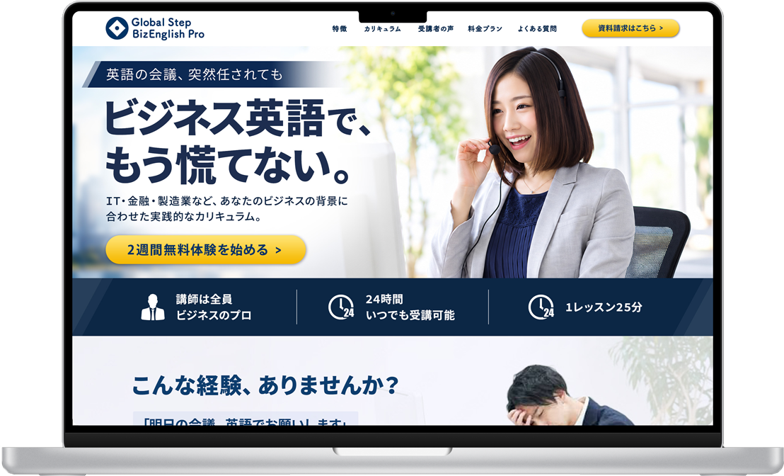
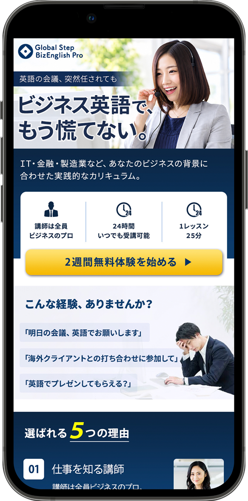

Overview課題とターゲット
新規の無料体験登録者を増やすこと。ターゲットは、仕事で急に英語が必要になったものの、一般的な英会話スクールでは解決しにくい悩みを持つビジネスパーソンです。
ターゲット
28〜42歳のビジネスパーソン（男女）。主にオフィスワークで、仕事が忙しく決まった時間を確保しにくい。
抱えている悩み
- 急に英語の会議に参加することになり、焦っている
- 日常会話中心のスクールでは仕事の役に立たない
- 忙しくて決まった曜日に通えない
Conceptコンセプト
ターゲットが実際に直面している「突然、英語の会議を任された」場面をそのまま広告の入り口にしました。
英会話スクールではなく、
仕事で英語が必要になった人のための
実践型トレーニングとして見せる。
「これ、今の自分に必要かも」
「無料なら試してみよう」
Bannerバナーデザイン
忙しい人が一瞬で内容をつかめるよう、目に入ってほしい順に情報の優先順位をつけ、上から下へ自然に読み進められる構成にしました。
共感のひとこと「英語の会議、突然任されても」
あえて小さく置き、自分ごととして読ませるきっかけに。ターゲットの悩みをそのまま言葉にしています。
メインコピー「ビジネス英語で、もう慌てない。」
最も大きく、太いネイビーで。悩みの解決後の姿を伝え、一番最初に目に入る要素にしました。
選ぶ理由を2つに絞る
「講師は全員ビジネスのプロ」「24時間いつでも受講可能」を、アイコン付きで並べて瞬時に判別できるように。日常会話スクールとの違いと、忙しさへの答えにあたる2点です。
CTAだけを目立たせる
落ち着いた配色の中で、ボタンのみ黄色に。「無料」という後押しをクリックしやすい横長のボタンにまとめました。
#152757#F6C437#F7F7F9英会話の広告にありがちなポップさは避け、BtoB広告くらいの洗練度を目指しました。一方で堅苦しくなりすぎないよう、写真は笑顔でオンライン会議に臨むリアルなビジネスシーンを選んでいます。
Landing PageLPファーストビュー
バナーをクリックしたユーザーが最初に目にする画面です。バナーで抱いた期待を途切れさせず、そのまま無料体験の申し込みへ進めることを意識しました。


バナーと同じ印象でつなぐ
コピー・写真・配色をバナーとそろえ、クリック後に「さっき見た広告だ」と安心して読み進められるようにしました。
左にコピー、右に人物
視線が自然に左上から流れるよう、メインコピーを左、人物写真を右に配置。サブコピーで「業界に合わせたカリキュラム」という強みを補足しています。
スクロールせずにCTAが見える
無料体験ボタンはバナーと同じ黄色で、ファーストビュー内に配置。SPでは強み3点のすぐ下に置き、親指で押しやすい幅にしています。